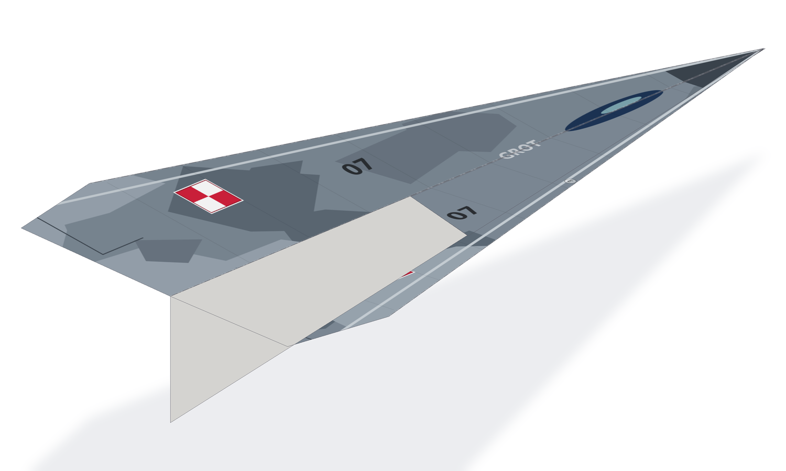
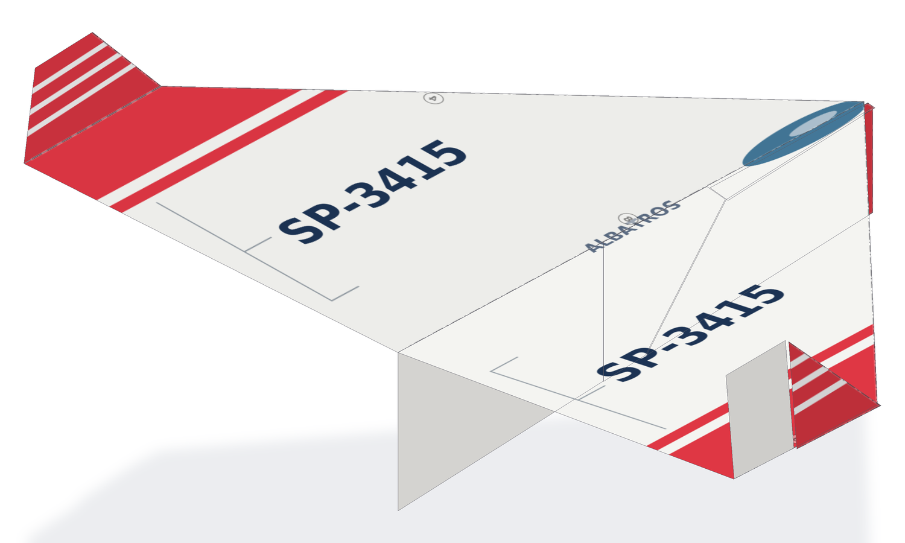
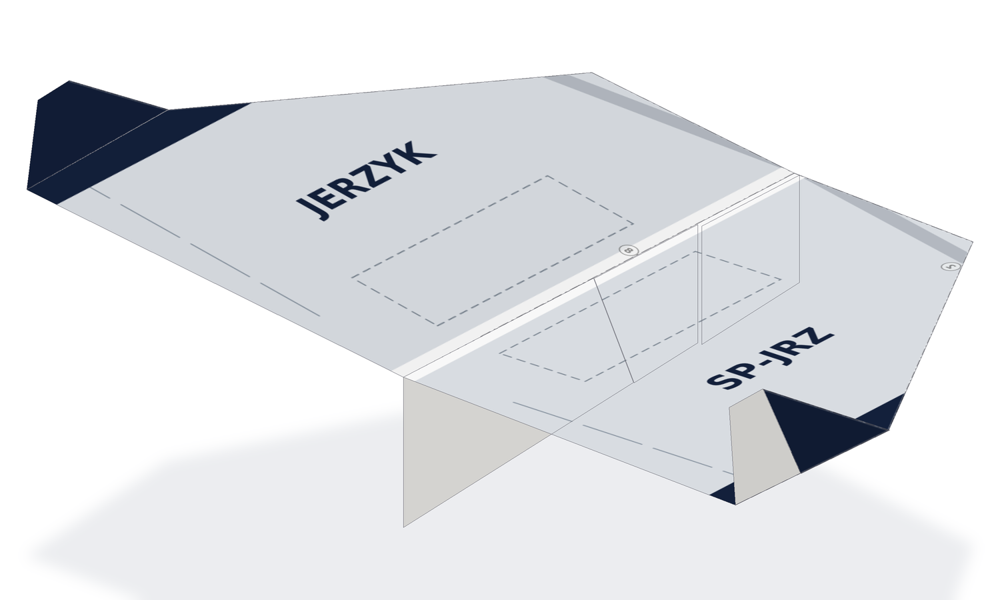
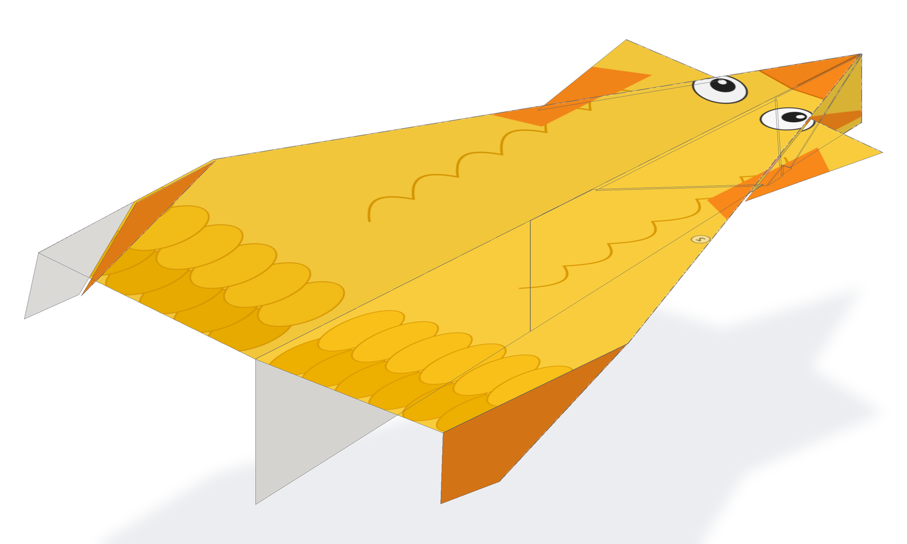
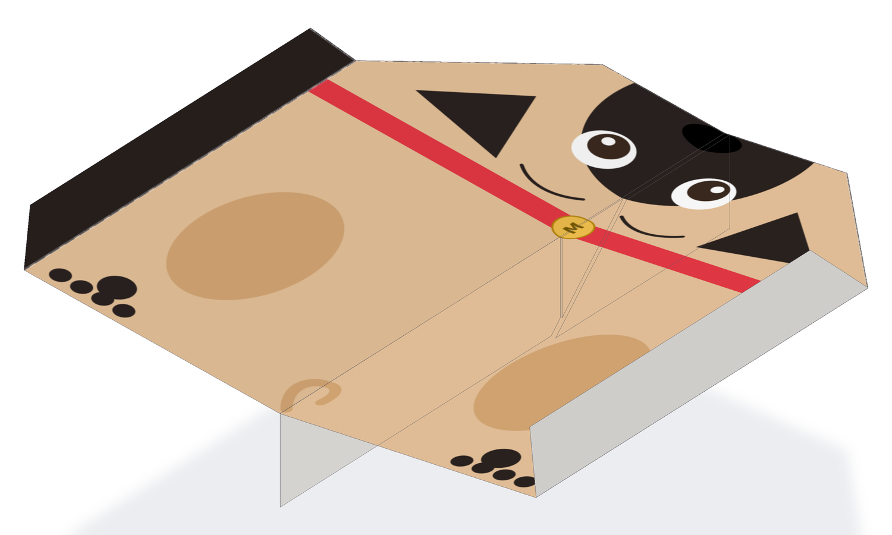
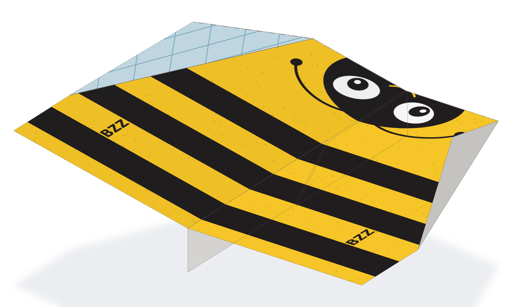

Papierowe samoloty
Odskocznia od poważnych wydruków: sześć samolotów z jednej kartki A4. Linie zgięć są wtopione w malowanie, a wzór po złożeniu trafia dokładnie na skrzydła i kadłub.
Jak drukować
- Tylko strona 1, jednostronnie, A4 80 g.
- Skala 100% („rozmiar rzeczywisty”), bez dopasowania do strony.
- Strona 2 PDF-a to instrukcja: zostaw ją na ekranie albo wydrukuj osobno.









